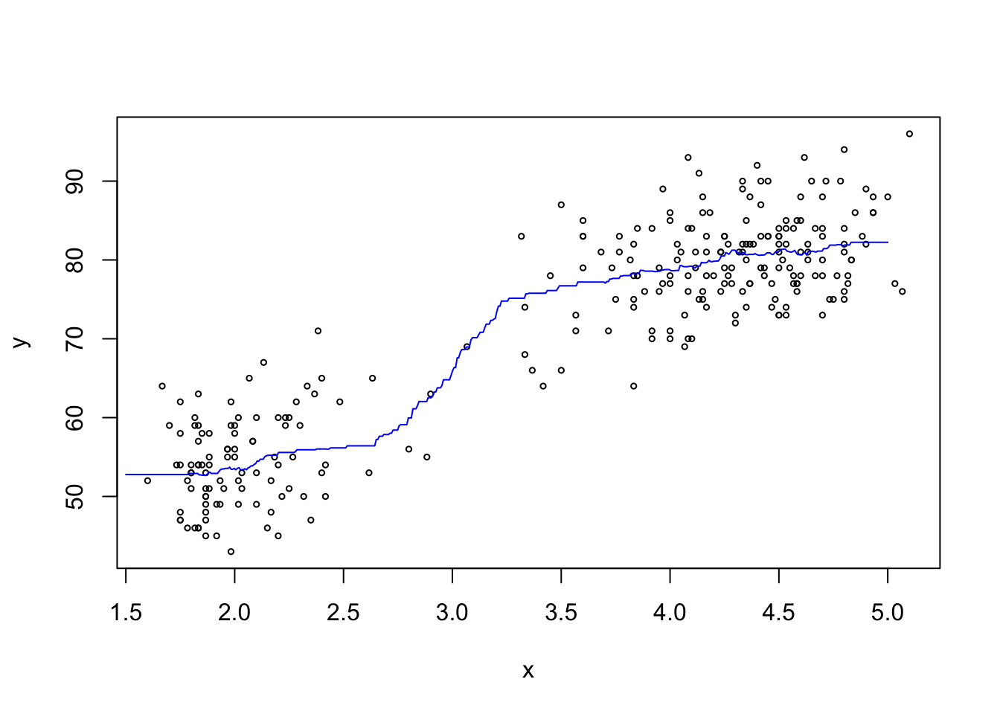

Section 7 k-Nearest Neighbour Regression
In the previous sections we used a fixed bandwidth \(h\) to determine the scale on which “closeness” of existing samples to a new input \(x\) was measured. While this approach generally works well, problems can appear in regions where samples are sparse (e.g. in example 5.2). This problem can be addressed by choosing \(h\) adaptively, using larger bandwidths where samples are sparse and smaller bandwidths in regions where there are many samples. The \(k\)-nearest neighbour method is one of several methods which implements this idea.
7.1 Definition of the Estimator
Definition 7.1 For \(k \in \{1, \ldots, n\}\), the k-nearest neighbour, or \(k\)-NN estimate for the model mean \(m(x)\) is given by \[\begin{equation} \hat m_k(x) := \frac1k \sum_{i\in J_k(x)} y_i, \tag{7.1} \end{equation}\] where \[\begin{equation*} J_k(x) := \bigl\{ i \bigm| \mbox{$x_i$ is one of the $k$ nearest observations to $x$} \bigr\}. \end{equation*}\]
The \(k\)-NN estimate \(\hat m_k(x)\) is the average of the \(k\) responses where the inputs are closest to \(x\). We can interpret equation (7.1) as a weighted average \[\begin{equation*} \hat m_k(x) = \sum_{i=1}^n w_i(x) y_i, \end{equation*}\] where the weights are given by \[\begin{equation*} w_i(x) = \begin{cases} \frac1k, & \mbox{if $i \in J_k(x)$, and} \\ 0 & \mbox{otherwise.} \end{cases} \end{equation*}\]
If several \(x_i\) have the same distance to \(x\), some tie-breaking rule must be used to decide which indices to include in the set \(J_k(x)\). This case is so unlikely that the choice of rule is not important. One could, for example, pick one of the tied neighbours at random.
The method can be used both for the one-dimensional case \(x\in\mathbb{R}\), and for vector-valued inputs \(x\in\mathbb{R}^p\). For the one-dimensional case, it is advantageous to sort the data in order of increasing \(x_i\). In this case, the position of \(x\) in the list of the \(x_i\) can be found using a binary search, and the nearest neighbours can be identified by search to the left and right of this position. For \(p > 1\) the method becomes computationally very expensive, since the data needs to be sorted afresh for every new input \(x\). Advanced data structures like “cover trees” can be used to speed up the process of finding the nearest neighbours.
7.2 Properties
The parameter \(k\) controls the “smoothness” of the estimate. In the extreme case \(k = n\), we have \(J_n(x) = \{1, \ldots, n\}\) and \[\begin{equation*} \hat m_k(x) = \frac1n \sum_{i=1}^n y_i \end{equation*}\] for all \(x\), i.e. for this case \(\hat m_k\) is constant. The other extreme is the case of \(k=1\), where \(\hat m_k(x)\) always equals the value of the closest \(x_i\) and has jumps at the mid-points between the data points.
In the next section we will learn how \(k\) can be chosen using cross-validation.
Independent of the value of \(k\), the function \(\hat m_k\) is always a step function, with jumps at points \(x\) where two points have equal distance from \(x\).
7.3 Numerical Experiment
In R, an implementation of the \(k\)-NN method can be found in the FNN package.
This package implements not only \(k\)-NN regression, but also \(k\)-NN
classification, and it implements sophisticated algorithms to speed up the
search for the nearest neighbours in higher-dimensional spaces. The function
to perform \(k\)-NN regression is
knn.reg().
Example 7.1 Here we compute a \(k\)-NN estimate for the mean of the faithful dataset,
which we have already encountered in examples 5.1 and 5.2.
We start by storing the data in the variables x and y:
x <- faithful$eruptions
y <- faithful$waitingNow we use knn.reg() to compute the \(k\)-NN estimate on a grid
of values. The help page for knn.reg() explains that we need to
convert the input to either a matrix or a data frame; here we use
data frames. The grid of input values where we want to estimate
the \(k\)-NN estimate is passed in via the optional argument test = ....
Here we use the arbitrarily chosen value \(k = 50\).
library(FNN)
x.test <- seq(1.5, 5, length.out = 500)
m <- knn.reg(data.frame(x=x),
y = y,
test = data.frame(x=x.test),
k = 50)
plot(x, y, cex=.5)
lines(x.test, m$pred, col = "blue")
The estimated mean curve looks reasonable.
7.4 Variants of the Method
For one-dimensional inputs and even \(k\), the symmetric k-NN estimate averages the responses corresponding to the \(k/2\) nearest neighbours smaller than \(x\) and the \(k/2\) nearest neighbours larger than \(x\).
To obtain a continuous estimate, we can define a “local bandwidth” \(h(x)\) as \[\begin{equation*} h(x) = c \max\bigl\{ |x - x_i| \bigm| i \in J_k(x) \bigr\} \end{equation*}\] for some constant \(c\), and then use the Nadaraya-Watson estimator with this bandwidth: \[\begin{equation*} \tilde m(x) = \frac{\sum_{i=1}^n K_{h(x)}(x - x_i) y_i}{\sum_{j=1}^n K_{h(x)}(x - x_j)}, \end{equation*}\] where \(K\) is a kernel function as before. If we use \(c = 1\) together with the uniform kernel \[\begin{equation*} K(x) = \begin{cases} 1/2 & \mbox{if $-1 \leq x \leq 1$} \\ 0 & \mbox{otherwise,} \end{cases} \end{equation*}\] this method coincides with the \(k\)-NN estimator.